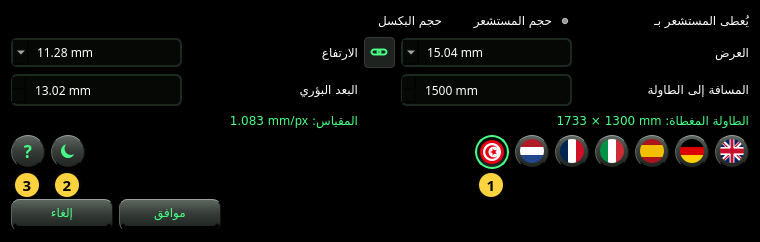

الإعداد
الكاميرا التي تعطي المقياس، واللغة، والسمة، والدليل.
يفتح إعداد نافذة الإعداد. فيها ما لا تستطيع الصورة وحدها قوله: كم تبعد الكاميرا عن الطاولة، وكذلك العدسة والمستشعر حين لا تذكرهما الصورة. وفيها أيضًا تُختار اللغة والسمة، ومنها يُفتح هذا الدليل.


الكاميرا
- يُعطى المستشعر بـ — كيف تصف المستشعر: بـ حجم المستشعر (العرض × الارتفاع بالـ mm) أو بـ حجم البكسل (عرض البكسل الواحد × ارتفاعه بالـ µm). اختر حجم المستشعر ما لم تكن متأكدًا أن الصورة بالدقة الكاملة للمستشعر.
- العرض والارتفاع — مقاس المستشعر، أو مقاس البكسل الواحد. اختر عنصرًا من القائمة أو اكتب رقمًا. في وضع حجم المستشعر تسمّي القائمة صيغ المستشعرات الشائعة (1/2.3″ و1″ وAPS-C والإطار الكامل وغيرها)؛ واختيار إحداها يضبط ارتفاعها أيضًا.
- السلسلة بينهما — حين تكون مفعّلة يتبع الارتفاعُ العرضَ (بكسل مربّع أو مستشعر مربّع). وتتعطّل من تلقاء نفسها حين يكون لمستشعر مسمّى ارتفاع مختلف.
- المسافة إلى الطاولة — من الكاميرا إلى سطح الطاولة، بالـ mm. قِسها: كل مليمتر له أثره (انظر المرجع).
- البعد البؤري — البعد البؤري للعدسة بالـ mm، كما هو مطبوع على العدسة أو كما تعرضه الكاميرا. استعمل البعد البؤري الحقيقي، لا مكافئ 35 mm.
تحت الحقول تعرض النافذة بالأخضر ما تعطيه هذه القيم:
- الطاولة المغطاة — جزء الطاولة الذي تُظهره الصورة، بالـ mm.
- المقياس — مقاس البكسل الواحد على الطاولة، بالـ mm/px. رقمان (مثل 0.578 × 0.646 mm/px) يعنيان أن البكسلات غير مربّعة.
النتيجة التي تحتاج إلى مقاس الصورة تقرأ — (يحتاج إلى صورة) إلى أن تُعرض صورة في النافذة.
المفاتيح المستديرة
- الأعلام — اللغة. يغيّر العلَم النافذة فورًا لتتمكن من قراءتها؛ ولا يتبعه البرنامج كله إلا بعد موافق. تُكتب العربية من اليمين إلى اليسار.
- السمة — لوحات داكنة أو فاتحة. مثل اللغة، تُعرض في النافذة وتُطبَّق بـ موافق.
- علامة ? — تفتح هذا الدليل في نافذة خاصة به، بلغة نافذة الإعداد.
موافق تحفظ كل شيء. إن كانت صورة معروضة وتغيّرت الكاميرا، يُعاد تحليلها فورًا. إلغاء أو مفتاح Esc لا يغيّر شيئًا، ولا حتى اللغة التي كنت تطّلع عليها.